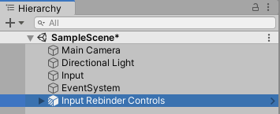
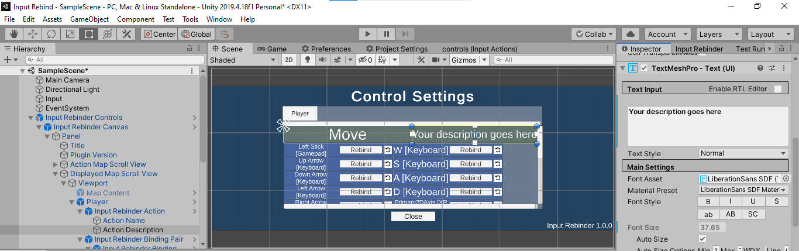
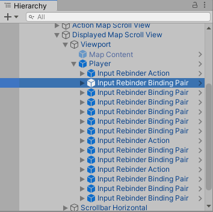
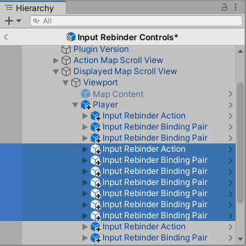
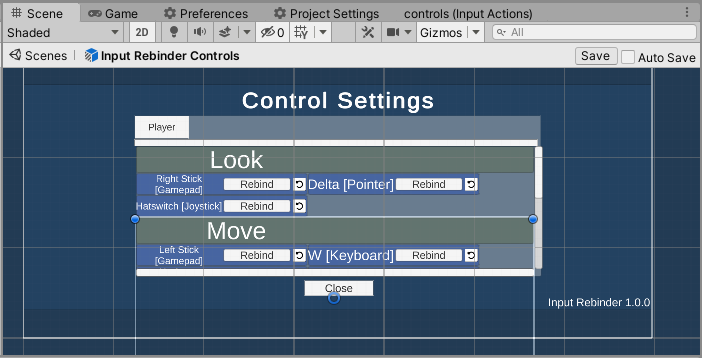
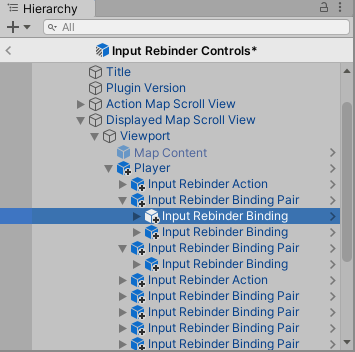
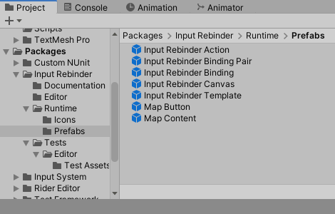
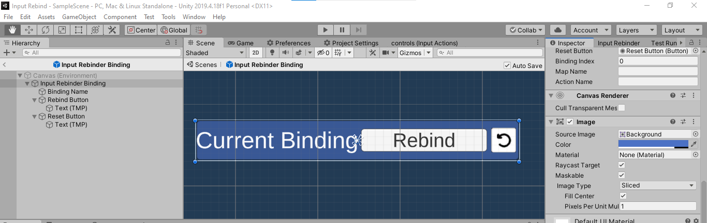

How to customize the appearance of the generated prefab
In almost every game, the default appearance of the generated prefab is not suitable for your aesthetic. Your game may have a theme that requires a certain color palette and font palette. The prefab generated by Input Rebinder is customizable just like any Unity game object.
There are two ways to modify the appearance.
Modifying the generated prefab variant
This way of modifying the prefab is straightforward. You can treat the prefab just like any other game object in your scene. The downside is that you would have to repeat the process each time you need to generate a new prefab, e.g because your .inputactions file has changed.
To avoid repetition, you should only modify the prefab after your game control design has been settled. However, if iterating over controls is needed, you should modify the plugin's prefab templates.
⚠️ WARNING: If you generate the prefab again, the default appearance will overwrite your current prefab variant and all its changes. To avoid this, you should rename your prefab variant on disk, set another name inside the plugin's editor window, or detach your scene instance from the prefab completely.
Bring the prefab into a scene
Drag the prefab variant from the project explorer to the scene hierarchy. You can then click on the prefab children game objects to modify them.

Examples of modifiable objects
Description of actions
Each action is held by an Input Rebinder Action prefab, under the corresponding Action Map prefab, which in turn is placed inside the Displayed Map Scroll View.
Every action is paired with an empty slot for a potential description. You can edit the underlying text. You can adjust the size and position of the text and its box.

Order of appearance of actions
It is possible to modify the order in which things are displayed. Each action and binding pair are arranged sequencially under an action map. The original order is determined by the order of your .inputactions file.

You can move an action with all its bindings by selecting all pairs between the action and next action. To move them in the hierarchy, Unity requires you to be inside a prefab view.
 
⚠️ WARNING: If you don't move the binding pairs with the action, the presentation will be messy. Although each binding will work individually and still connect to the correct action, your user will be confused.
Order of appearance of bindings
Similar to actions, bindings can be arranged in a custom order. All bindings come in pairs. Each pair may contain 1 or 2 bindings. You may shuffle the order of pairs within an action, the order of bindings within a pair, or exchange bindings between pairs. The original order of bindings is determined by your .inputactions file. Unity may require you to go inside a prefab view to move the bindings around.

⚠️ WARNING: It is possible to move a binding pair outside of its corresponding action.
Modifying the prefab templates used by the plugin
This way of modifying the prefab is indirect and more complicated. However, this method will make the plugin generate prefabs in your aesthetic all the time. The prefab templates are in the folder Packages/Input Rebinder/Runtime/Prefabs.
Currently, there is no way of saving your aesthetics for future use. Therefore, if a package update is attempted, your modified prefab templates will get overwritten.

Examples of changes
Change the background color of a binding
To change the background color of a binding, you can open the prefab of a binding. Then you can change the background color of the root game object.
